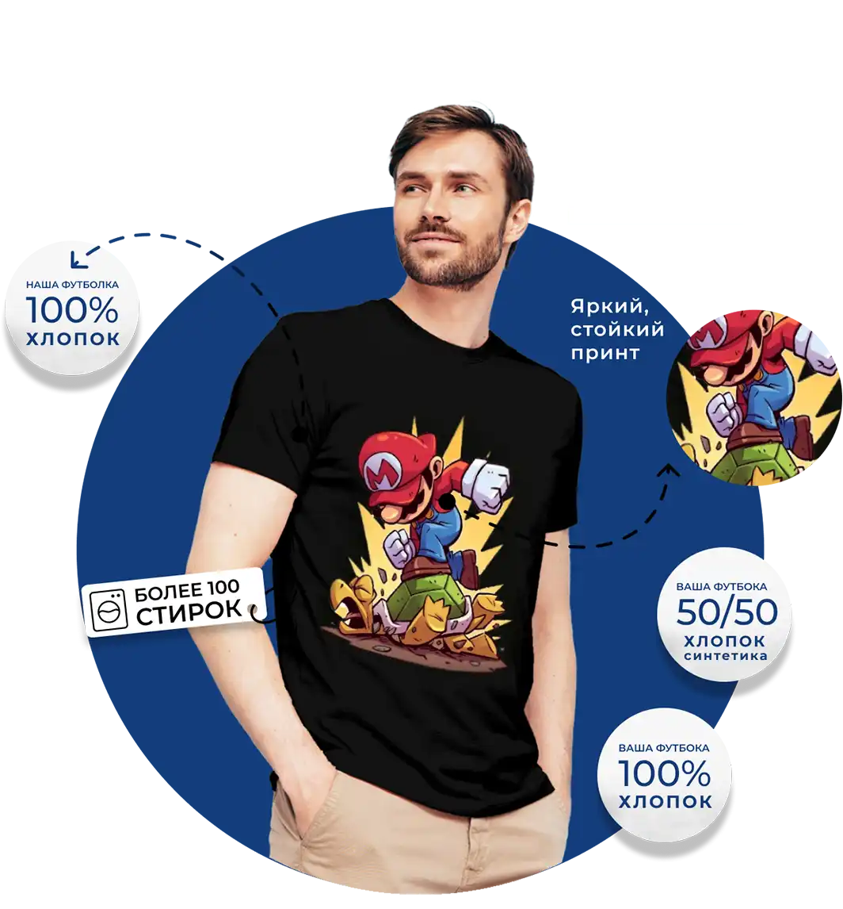

Описание и стоимость
Полноцветная DTF печать позволяет реализовать любые дизайнерские идеи. Технология DTF позволяет наносить принты на футболки с помощью специальной пленки. При этом используется специальный принтер, который печатает изображение на пленке, а затем оно переносится на ткань с помощью термопресса.
Принт (на вашей футболке, формат до А3): 990 ₽
Дополнительное нанесение: +120 ₽ на спине, +120 ₽ на рукаве.